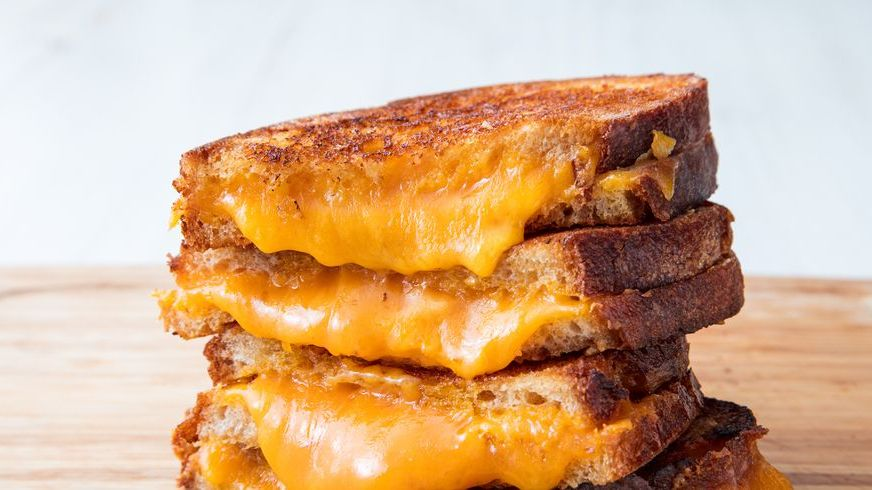

Grilled Cheese

Description
This is a grilled cheese sandwhich. It is very tasty!
Ingredients
- 5 tbsp. butter, softened, divided
- 4 slices sourdough bread
- 2 c. shredded cheddar
Directions
- Spread 1 tablespoon butter on one side
of each slice of bread. With butter side down,
top each slice of bread with about ½ cup cheddar.
- In a skillet over medium heat, melt 1
tablespoon butter. Add two slices of bread,
butter side down. Cook until bread is golden and
cheese is starting to melt, about 2 minutes.
Flip one piece of bread on top of the other and
continue to cook until cheese is melty,
about 30 seconds more.
- Repeat for the second sandwich, wiping skillet
clean if necessary.